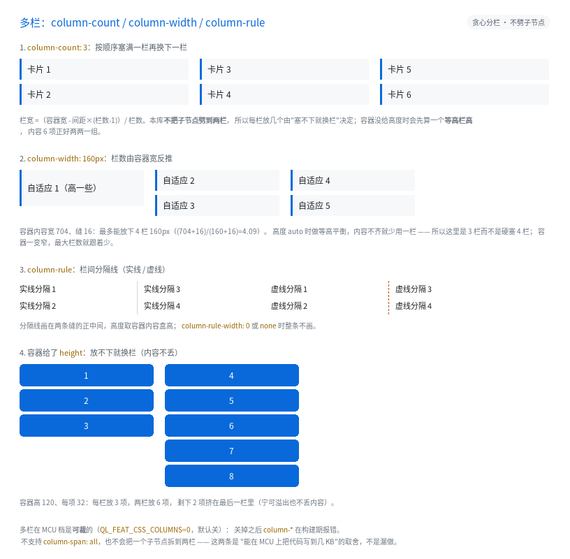

多栏：column-count / column-width / column-rule

完整程序：example/34_columns/
一页要放"很多张小卡片"，最省事的不是 flex 也不是 grid，而是把容器分成几栏、
内容从上往下填，填满一栏换下一栏 —— 这就是 CSS 的多栏：
.cards { column-count: 3; column-gap: 16px; }
.card { height: 30px; margin-bottom: 6px; }
<div class="cards">
<div class="card">卡片 1</div>
<div class="card">卡片 2</div>
<!-- ... -->
</div>
1. 栏数从哪来
| 你写的 | 栏数 |
|---|---|
column-count: 3 |
3 栏（上限 QL_CFG_UI_COLUMN_MAX = 8） |
column-width: 160px |
floor((容器内容宽 + 缝) / (160 + 缝)) |
| 两个都写 | 取上面两个里小的那个 |
栏宽则是 (容器内容宽 - 缝 × (栏数 - 1)) / 栏数。
column-gap 不写时按 CSS 的 normal 算成 16px（本库用 1em≈16px 的近似）。
所以 column-width 是"响应式"的写法：容器一变窄，栏数自动变少，不用写 @media。
2. 内容怎么分配（本库的取舍）
按文档顺序往当前栏里塞，塞不下（会超过栏高）就换下一栏。 不会把一个子节点劈成两栏 —— 一个很高的卡片会占满它所在的那一栏。
栏高怎么定：
- 容器写了
height→ 就用它当栏高，放不下就换栏；最后一栏放不下就溢出 （宁可溢出也不丢内容）； - 容器高度
auto→ 先求一个"最小能塞进 N 栏的栏高"（等高栏）， 子节点高度不齐时可能用不满 N 栏，但每栏都不会特别空。
这条取舍的代价写进了《CSS3 覆盖与裁剪》§18.13：真·分栏的断点可能落在文字行中间， 要把同一个节点劈成两段来画，而本库的绘制、命中、滚动、脏区剪枝全都建立在 "一个节点一个盒"上。对嵌入式 UI 来说，"卡片列表分两三栏"才是常见需求。
3. 栏间分隔线
.news { column-rule: 1px solid #D0D7DE } /* 也支持 1px dashed / dotted */
- 画在两条缝的正中间，高度取容器内容盒高；
column-rule-width: 0或column-rule-style: none时整条不画；- 颜色不写就是
currentColor； - 它是"装饰"，不占布局：栏宽已经由
column-gap决定。
4. 什么时候用多栏、什么时候用 grid
| 场景 | 选哪个 |
|---|---|
| 一堆等高的小卡片，顺序不重要（标签墙、快捷入口） | 多栏最省事 |
| 卡片高度不一，且要按行对齐 | grid（多栏会造成每栏顶部错位） |
| 需要"每栏标题 + 内容"的成组结构 | flex（多栏会把标题和内容拆到不同栏） |
| 长文正文分栏 | 多栏（但注意：本库不劈子节点，长段落会整段落到一栏） |
5. 裁剪
多栏是能力包 QL_FEAT_CSS_COLUMNS：
- PC / Mobile：默认开（实测 +640 B
.text）； - MCU：默认关。关掉之后
column-*在构建期报错（不静默降级）。
6. 不支持的部分
| 写法 | 原因 |
|---|---|
column-span: all |
要打断"盒内分裂"的不变量（同上） |
column-fill、break-before/after/inside |
GUI 里几乎用不到；断页是打印的语义 |
百分比 column-gap |
与 flex 共用 gap_col，只存 px |
这些都构建期报错，不会悄悄当成没写。